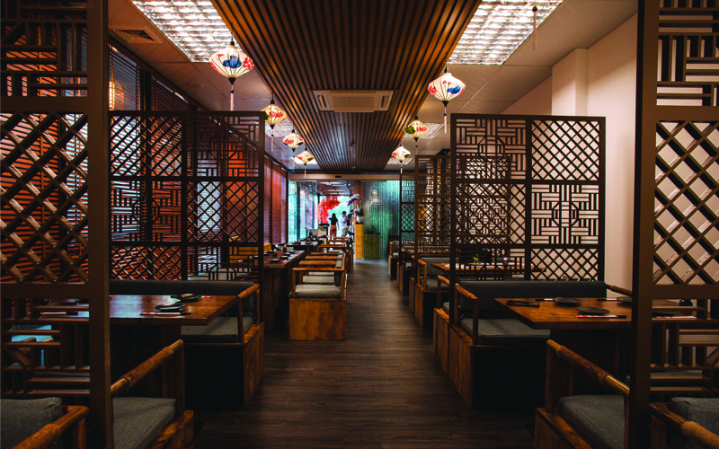

Nise Ryōtei được ra đời vào ngày 20 tháng 10 năm 2024 trong lúc sự phát triển và bùng nổ của nghành F&B. Ra đời với sứ mệnh phục vụ khách hàng với dịch vụ tốt nhất, giúp khách hàng trải nghiệm ngoài Sushi truyền thống ra và các món ăn đặc trưng của nhà hàng. Nise Ryōtei đã tự lựa chọn cho mình con đường đi lên lấy chất lượng và uy tín hàng đầu. Năm 2020 cũng là năm thương hiệu Buffet Sushi Nise Ryōtei chính thức được ra đời.Nhà hàng của chúng tôi được thành lập với mục tiêu mang đến trải nghiệm ẩm thực Nhật Bản đích thực cho khách hàng tại Việt Nam. Với sự chú trọng đến từng chi tiết trong từng món ăn, chúng tôi cam kết mang đến cho bạn những trải nghiệm tuyệt vời nhất.
Đội ngũ đầu bếp của chúng tôi có nhiều năm kinh nghiệm trong việc chế biến các món ăn Nhật Bản truyền thống, kết hợp với sự sáng tạo để mang đến cho bạn những món ăn độc đáo và ngon miệng.
Chúng tôi luôn nỗ lực không ngừng để cải thiện chất lượng dịch vụ và món ăn, với mong muốn trở thành điểm đến yêu thích của những ai yêu thích ẩm thực Nhật Bản.